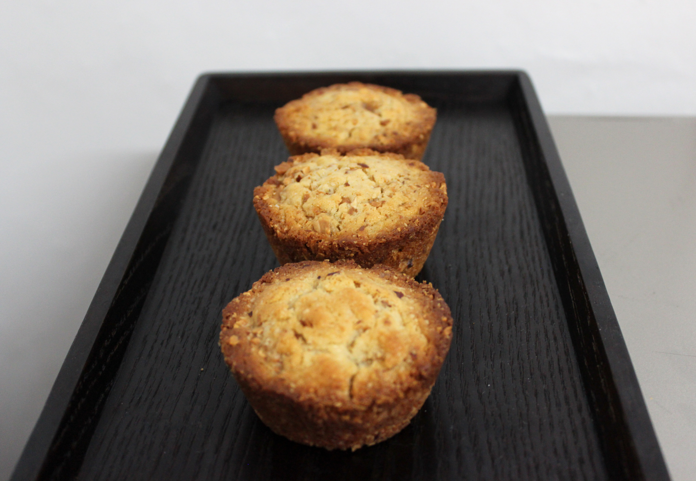

Recipe
코코넛 아몬드 쿠키
재료
버터 50g, 카놀라유 40g, 계란1개, 설탕90g, 소금 한 꼬집, 박력분 150g, 베이킹파우더 2g, 코코넛파우더 60g, 아몬드 100g
작업방법
- 휘퍼로 버터를 녹이고, 카놀라유를 넣어 섞습니다. 설탕과 소금을 넣고 잘 녹여준 뒤, 계란을 조금씩 넣어가며 섞어줍니다.
- 박력분과 베이킹파우더, 코코넛파우더를 체쳐 1에 섞어줍니다.
- 아몬드를 180도로 예열한 오븐에 5분 정도 바짝 구워 가루냅니다.
- 반죽에 아몬드 가루를 넣고 잘 섞은 뒤, 머핀 틀에 팬닝합니다. 180도로 예열한 오븐에서 15분간 구워줍니다.